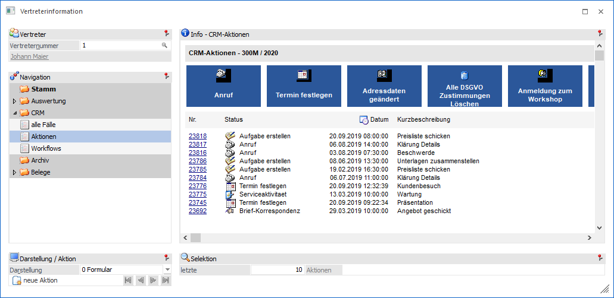
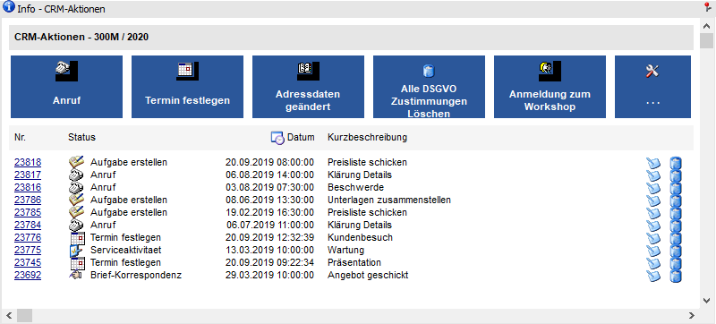
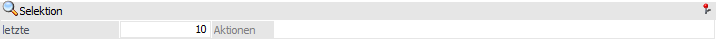
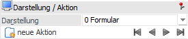

In der Ansicht "Aktionen" werden CRM Fälle des Typs "CRM Aktion" angezeigt, welche für den Vertreter erfasst wurden. Die Darstellung kann hierbei in Form einer Formularansicht oder als Tabelle erfolgen.

Die Ansicht "Aktionen" besteht aus den folgenden Info-Elementen:
ü Info - CRM-Aktionen
ü Selektion
ü Darstellung / Aktion
Info - CRM-Aktionen

An dieser Stelle werden die CRM-Aktionen, gemäß der nachfolgenden Selektion, dargestellt. Die Art der Anzeige kann mit Hilfe der Option "Darstellung" gewählt werden.
Ø CRM-Fall bearbeiten
Durch Anwahl dieses Buttons kann ein angelegter CRM-Fall bearbeitet werden.
Ø CRM-Fall löschen
Mit Hilfe dieses Buttons kann der CRM-Fall gelöscht werden.
Selektion

In diesem Bereich kann definiert werden viele CRM-Aktionen dargestellt werden sollen. Die gewählte Einstellung wird benutzerspezifisch gespeichert.
Ø letzte x Aktionen
An dieser Stelle kann die Anzahl der maximal anzuzeigenden CRM-Fälle hinterlegt werden.
Darstellung / Aktion

Ø Darstellung
An dieser Stelle kann mit Hilfe einer Auswahlliste gewählt werden, ob die Darstellung der Fälle in Form eines Formulars oder einer Tabelle erfolgen soll.
Ø neue Aktion
Durch Anwählen dieses Buttons kann ein weiterer CRM-Fall gestartet werden. Dabei stehen maximal 5 Aktionen direkt zur Auswahl und ein weiterer Eintrag mit der Bezeichnung "Auswahl", über welchen das Fenster "Neuer Fall" aufgerufen werden kann.
Hinweis
Bei den vorgeschlagenen Aktionen handelt es sich zum einen um jene, die in den Favoriten abgelegt sind und zusätzlich - in dieser Reihenfolge - um jene, welche zuletzt verwendet wurden. Treffen diese beiden Kriterien nicht zu, dann werden die ersten Aktionen vorgeschlagen.
Ø VCR-Buttons
Sollte die Anzeige der CRM-Fälle in der Formularansicht über mehrere Seiten dargestellt werden, so kann mit Hilfe der VCR-Buttons zwischen den einzelnen Seiten gewechselt werden.